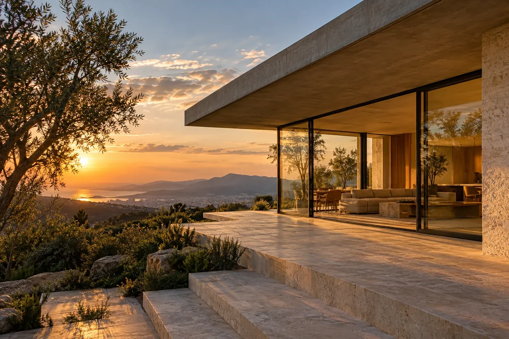
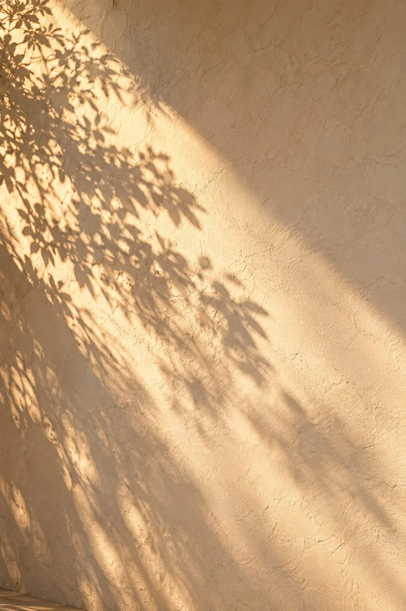
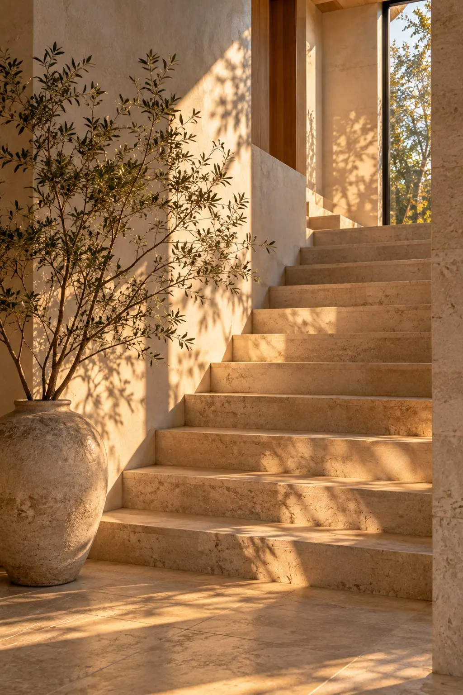
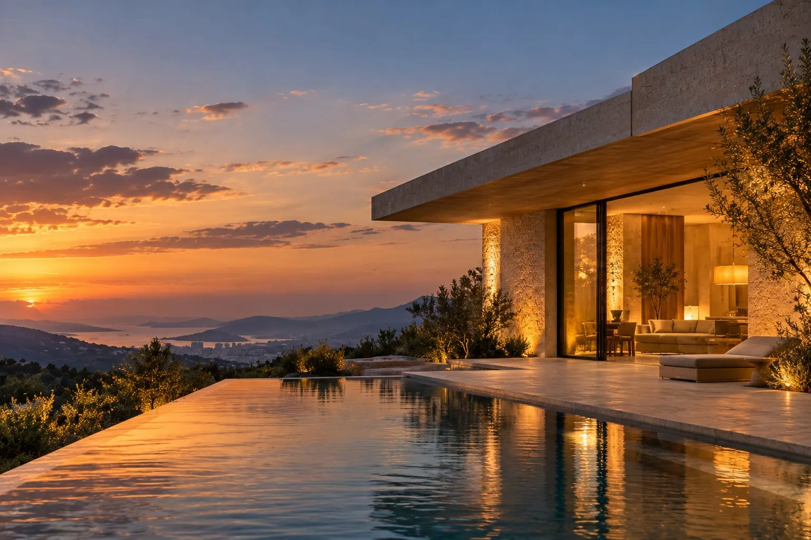

Architecture & Renovation
住まいを、作品に。
Redefine the way you live.
RENOVA — Fictional brand
Design sample by Nook Design
01Concept
Space, light,
and material.
余白と、光と、素材で。暮らしを設計する。
RENOVA は、すでにある空間を壊して新しくするのではなく、その場所に眠る価値を読み解き、もう一度かたちを与えるリノベーションブランドです。
壁の厚み、窓から入る光の角度、手に触れる素材の温度。数字や図面だけでは表せない「心地よさ」まで設計し、住まいを一点ものの作品へと仕立てます。


02About RENOVA
既存の空間を読み解き、新しい価値を与える。
設計から素材選び、施工の監理までを一貫して担当します。住まい手の暮らし方を丁寧にうかがい、残すもの・変えるものを一緒に見極めるところから始めます。
- Read読み解く構造・光・風・眺めなど、その場所がもともと持つ条件を調べます。
- Edit編集する暮らし方に合わせて、空間の順番と余白を組み立て直します。
- Craft仕立てる素材と職人の手仕事で、時間とともに美しくなる仕上げを選びます。
03Works
Selected Works
施工事例（掲載している事例はすべて架空のものです）
04Service
設計から施工まで、ひとつの視点で。
間取りの変更から、素材一枚の選定まで。住まい全体を同じ考え方で整えることで、細部まで一貫した空間をつくります。
05Process
ご相談から完成まで
期間は一般的な目安です（架空の設定）。住まいの状態やご要望によって変わります。
- 01
Consultation
ご相談
暮らし方や今のお住まいの悩み、ご予算の考え方をうかがいます。
約1〜2週間 - 02
Survey
現地調査
構造・設備・光の入り方を確認し、残せるものを見極めます。
約1日 - 03
Proposal
プランとお見積り
図面・模型・素材サンプルで、完成後の空間を具体的にご提案します。
約3〜4週間 - 04
Design
設計・素材決定
細部の納まりや照明計画、仕上げの素材を一緒に決めていきます。
約1〜3か月 - 05
Construction
施工
設計者が現場を確認しながら、職人と工事を進めます。
約1〜5か月 - 06
Handover
お引き渡し
仕上がりを一緒に確認し、素材のお手入れ方法をお伝えします。
完成後も相談可
06News
お知らせ
掲載しているお知らせは架空のものです。

07Contact
住まいの、次の章を一緒に。
まだ計画が決まっていない段階でも構いません。今の住まいで感じていることから、お聞かせください。
相談する（デモ）※ 架空のブランドのため、実際のご相談は受け付けていません。